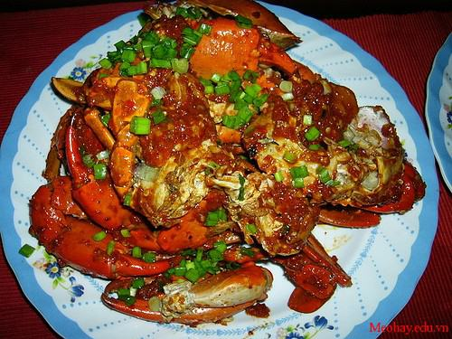

Cùng bắt tay làm thử thôi nào!
- Cua thịt (Nên chọn những con cua còn tươi ngon): 2 con
- Me chua chín: 1/2 bát con
- Tỏi: 4 tép băm nhuyễn
- Hành tây: 1 củ nhỏ đã thái mỏng
- Bột năng: 1 thìa
- Dưa leo: 1 quả
- Ngoài ra còn các gia vị khác như: Đường, hạt tiêu, ớt, hạt nêm…
Bước 1: Sơ chế cua
- Cua đem rửa sạch, tách bỏ phần mai, dùng đũa khều nhẹ phần gạch ở mai cua để riêng ra một cái bát nhỏ.
Bạn có thể để cua nguyên con, nhưng nếu muốn cua ngấm đều gia vị tốt nhất nên cắt cua làm làm đôi, hoặc làm 4 tùy theo sở thích của từng người.
- Phần càng cua vốn rất cứng vì vậy nên dùng dao hay chày đập hơi dập để các gia vị ngấm đều vào phần thịt trong càng cũng như tránh tình trạng nổ khi chiên.
- Lấy phần cua đã được sơ chế xong cho vào một cái tô rộng, cho thêm một chút hạt nêm và một hạt tiêu rắc đều lên phần cua, đảo nhẹ để cua ngấm gia vị, ướp cua trong khoảng 30 phút.
- Sau khi cua ướp đã ngấm đều gia vị, bạn bắc chảo nên bếp, cho dầu vào chiên cua. Cua cần được chiên vàng sao cho không quá trắng cũng không bị cháy, sau đó vớt cua ra một cái rổ để ráo mỡ.
Bước 2: Xào cua cùng nước sốt me
Đây là công đoạn rất quan trọng, nước sốt me ngon hay không sẽ quyết định đến độ ngon của món ăn nên bạn cần chú ý hơn.
- Trước tiên cho me vào nước nóng, lấy muôi đánh nhuyễn, gắp bỏ hết phần hạt, dùng dụng cụ lọc, lọc lấy khoảng ¾ bát
- Cho 2 thìa dầu ăn, đổ tỏi vào phi lên, khi tỏi có màu vàng nhạt và thơm thì cho hành tây, nước me cùng với đường và 2 muỗng cà phê hạt nêm vào cùng. Đun hỗn hợp trên đến khi nước me sôi thì cho thêm một chút ớt vào (Lượng ớt nhiều hay ít tùy theo vào sở thích ăn cay của mỗi người).
- Bột năng hòa tan cùng một chút nước, đổ từ từ vào nước sốt để tạo độ sánh, một tay đổ, một tay quấy đều để bột không bị vón cục.
- Nêm nếm lại gia vị một lần nữa, khi thấy các vị chua, cay, mặn, ngọt đã hài hòa thì cho cua vào xóc đều, đun nhỏ lửa 5 – 7 phút là được.
- Phần gạch cua: Cho một chút dầu vào phi thơm tỏi, đổ gạch cua vào, nêm một chút gia vị.
Bước 3: Trình bày
Sau khi món cua rang me đã hoàn tất để trang trí cho món ăn bạn hãy dùng lá xà lách xếp một lượt xuống dưới, dưa chuột xắt lát xếp chạy quanh viền đĩa. Xếp từng miếng cua lại thành hình nguyên con, úp mai lên, rưới gạch cua lên trên và rắc thêm một chút rau răm hoặc rau mùi, vậy là bạn đã có món cua rang me thật hấp dẫn do chính tay mình làm rồi.
Chúc bạn và gia đình có bữa cơm cuối tuần thật ngon và ý nghĩa với món cua rang me mà Meohay vừa chia sẻ nhé!